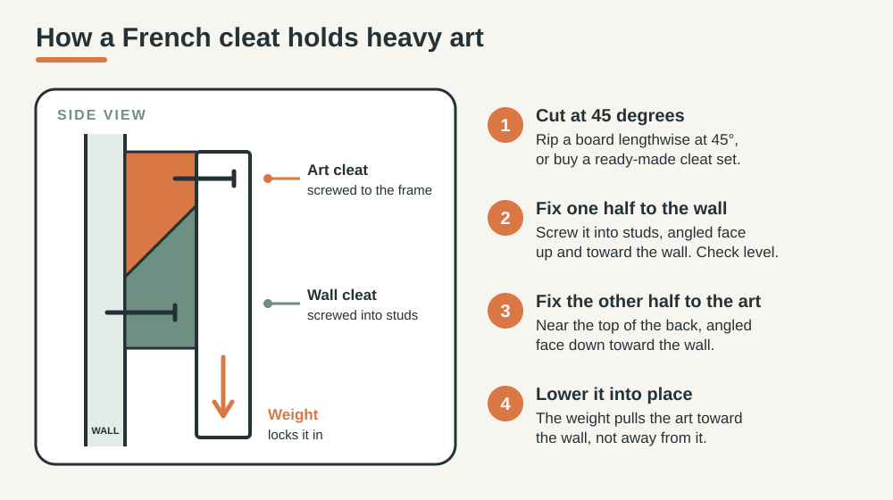

HOME PROJECTS · DECOR
How to Hang Large Wall Art Without Damaging Your Walls
A big piece of art can change a whole room, but the wrong hook turns it into a hole in the wall and a broken frame. This guide covers the decisions that matter: height, what is behind your wall, hardware that matches the weight, and when a French cleat is the better choice.
Short answer: hang the center of the piece about 57 inches above the floor (or 6 to 10 inches above furniture), fix it into a stud or into anchors rated well above its weight, and use two hanging points or a French cleat for wide pieces. Plan on paper first so you only drill once.

Disclosure: this article includes one affiliate link, marked as such in section 10. If you buy through it, HomeProjectWise may earn a commission at no extra cost to you. Our advice does not depend on it.
1. Measure and weigh before you touch the wall
- Weigh the piece. Step on a bathroom scale holding it, then subtract your own weight. The frame, glass and backing all count.
- Measure the height and width, and the distance from the top edge to the hanging point (the D-rings, or the wire pulled tight).
- Work out the hook height: 57 inches, plus half the height of the art, minus the distance from the top edge to the hanging point. Example: a piece 36 inches tall with its hanging point 3 inches below the top edge gives 57 + 18 − 3 = 72 inches.
2. Choose the height
Galleries and museums commonly place the center of a piece at about 57 inches from the floor, close to average eye level. Most people hang art higher than they should, so measuring this once makes a visible difference. That number is for open walls and low furniture. Above a sofa, console or bed, the relationship with the furniture matters more: leave roughly 6 to 10 inches between the furniture and the bottom of the frame, and let the piece sit a little higher or lower than 57 inches if needed. A common rule of thumb is to keep the art about two thirds to three quarters of the width of the furniture below it. In rooms where you mostly sit, lowering the center by a few inches feels more natural.

3. Find out what is behind the wall
Most US interior walls are drywall over wood studs, and studs are normally spaced 16 or 24 inches apart, center to center. Scan at several heights with a stud finder and mark every stud it finds. Stud finders can also react to pipes and wires, and none is perfect, so do not rely on the device alone. Keep your marks away from outlets and switches, turn off the power to the circuit if you are drilling close to them, and test the spot with a small nail before you drill.
- Drywall: hang from a stud or use anchors rated for the weight.
- Plaster: more brittle. Use a small pilot hole, drill slowly and expect to need anchors designed for plaster.
- Brick or concrete: needs a masonry bit and wall plugs, not drywall anchors.
- Rental walls: check the lease first. Many landlords accept small holes, but ask.
4. Match the hardware to the weight
The rule is simple: choose screws or anchors rated for more than the weight of the piece, and do not run them at their limit. Package ratings are based on a specific wall thickness and on installing the anchor exactly as instructed. In a Family Handyman test in half-inch drywall, nearly all the anchors met or beat their ratings, but a hammer-in style anchor held its rating and then popped out suddenly when overloaded. Treat the number on the box as a ceiling, not a target.
- Into a stud: the strongest option. Use a wood screw long enough to bite well into the stud.
- Between studs: toggle-style or heavy-duty anchors with a rating well above the weight. Small plastic anchors are for light frames only.
- Two points instead of one: splits the load and keeps wide pieces level.
- Adhesive strips: only for light pieces within the printed limit, and not in humid rooms.
5. Hang it, step by step
- Cut kraft paper to the size of the art and mark the hanging points on it.
- Tape the template to the wall with its center at your chosen height and step back to check it.
- Check it with a level, then mark the hanging points through the paper.
- Confirm there are no studs, wires or pipes in the way, or move to a stud.
- Drill a pilot hole at each mark, insert anchors if needed and drive the screws or hooks.
- Remove the template and hang the piece.
- Level it from the top edge and adjust.
- Add small rubber bumpers to the lower corners so it does not shift.
6. For heavy or wide pieces, use a French cleat
A French cleat is two matching boards cut at 45 degrees. One is screwed to the wall, ideally into studs, and the other to the back of the art. The art slides down onto the wall board and its own weight pulls it toward the wall instead of away. The load is spread along the whole length, so it suits large frames, mirrors and heavy pieces. Ready-made cleat sets are sold at hardware stores, and you can also cut your own from a straight board.

7. Tricky walls and rooms
- Humid rooms: keep art away from direct shower spray and read the maker's care instructions. If moisture is a problem, start with how to reduce bathroom condensation.
- Entryways and hallways: narrow walls need smaller or vertical pieces. The entryway reset guide helps you plan hooks and storage around the art.
- Lighting: side glare ruins big art. See better evening home lighting to place lamps so the piece is lit without reflections.
- Part of a bigger refresh: if the wall is one part of a room that feels off, how to make a room feel calmer covers layout, lighting and clutter.
8. Common mistakes
- Hanging too high. Measure to the center, not the top edge.
- Using the small hook in the box for a large, heavy frame.
- Skipping the paper template, then patching extra holes.
- Drilling without checking for wires or pipes.
- Forgetting the glass and frame weight when choosing anchors.
9. When to call a professional
Stop and call an electrician or a handyman if your stud finder signals live wiring near the spot and you cannot move it, if the piece is very heavy or made of glass or stone, if the wall is old plaster that crumbles, or if you are mounting above a staircase or over a fireplace. Moving a hole costs little. Repairing a wire or a fallen frame does not.
10. Choosing oversized art
Size, material, care and return terms matter more than style when the piece is large and ships in a big box. Check what hanging hardware is included, how the piece is finished, how it should be cleaned, and the return and damage policy before you order.

Where to look, and how we chose these options
We looked at what suits a beginner hanging a large piece: a clear size range, a care guide, hardware or a reusable frame, and a clear return process.
- A specialist online store for oversized art. BIG Wall Décor sells large prints. According to the brand, its ArtFab line is a fabric print that can be swapped within the same reusable aluminum frame, and it also offers metal and acrylic pieces. Check the product page for weight, size and care.
- A local framer or print shop. Good if you want a custom size or a specific frame, and you can see the finish before you buy.
- Your own photo printed at large size. Works well for personal pieces. Ask the print service about the paper or material and how it should be hung.
Frequently Asked Questions
How high should I hang large wall art?
On an open wall, aim for the center of the piece at about 57 inches (145 cm) above the floor, which is roughly average eye level. Above a sofa or console, the relationship with the furniture matters more, so leave roughly 6 to 10 inches between the furniture and the bottom of the frame.
Can I hang heavy art on drywall without a stud?
Yes, if you use anchors rated above the weight of the piece and follow the instructions on the package, including the wall thickness it was rated for. For very heavy or wide pieces, a stud or a French cleat screwed into studs is safer.
How many hooks or anchors does large art need?
Wide pieces sit straighter and carry the load better on two hanging points than on one. Spread the weight across studs or several anchors, and check the hanging hardware the maker recommends.
Are adhesive strips safe for large art?
Only for light pieces within the weight limit printed on the strips. For large or heavy art, use screws, anchors or a cleat. Adhesive can also let go in humid rooms.
Can I lean large art instead of hanging it?
Yes, leaning a piece on a console, a low shelf or the floor avoids drilling. Make sure it cannot be knocked over, especially around children and pets, and keep it away from heat and splashes.
Sources and last review
Last reviewed: October 6, 2026. Numbers in this guide are rules of thumb from the sources below. Always follow the instructions that come with your own hardware.